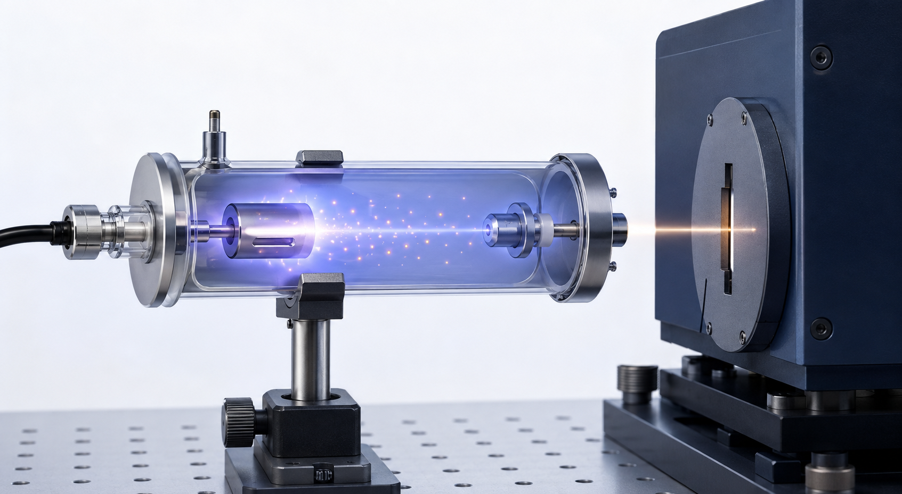
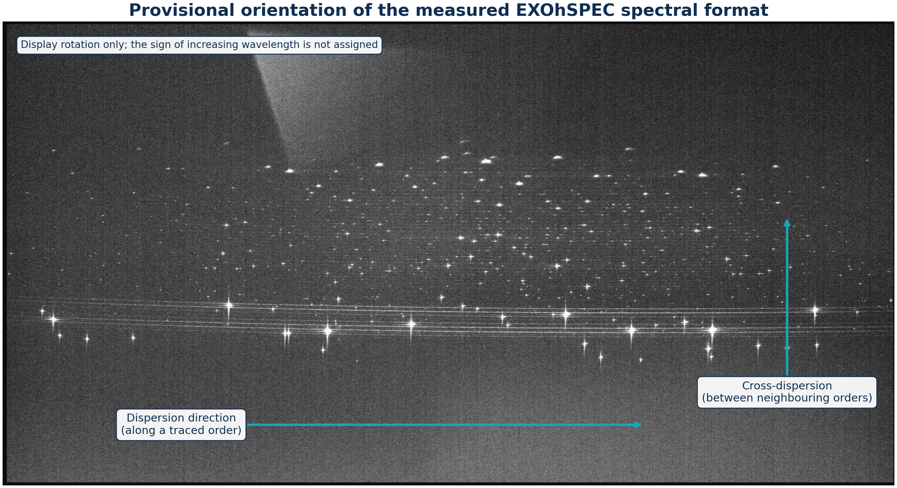
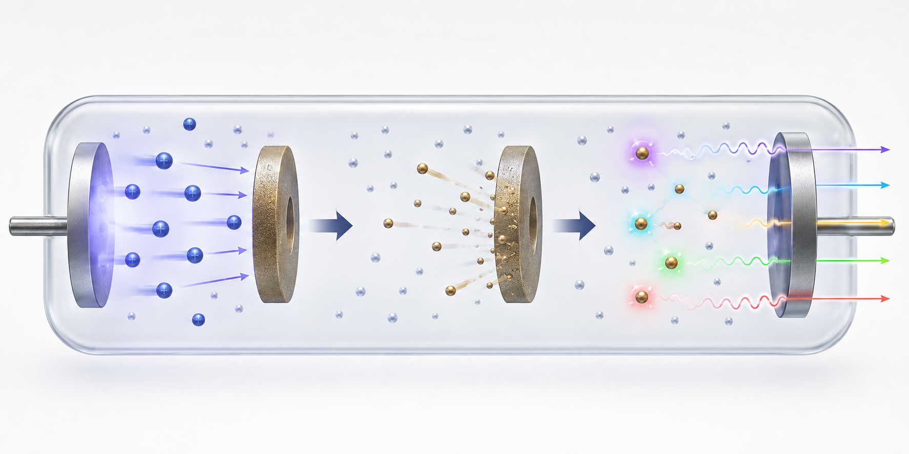

Thorium-argon spectral lines: emission physics and a measured example
University of Hertfordshire · Exoplanet high-resolution spectroscopy
Download the expanded technical report (PDF)Abstract
During practical work on the EXOhSPEC project, several thorium-argon lamp spectra were recorded. The striking field of bright features prompted a simple question: what are these lines, how does a Th-Ar lamp produce them, and why are they useful in astronomy? This report grew from that curiosity. It explains hollow-cathode emission, the difference between emission and absorption, thorium and argon charge states, line profiles, applications, and the path from a two-dimensional FITS image to a wavelength-calibrated spectrum. The recorded frames are used as a real example, not as a claim of completed wavelength calibration.

The measured two-dimensional spectral format
The stretch below is intentionally stronger than a conventional linear display. It exposes faint features, structured background, bright cores, and the geometry of the recorded format on the same panel.
What the camera records
An echelle exposure is not initially a familiar one-dimensional graph. The detector receives many curved spectral orders at once. Position along an order is the dispersion coordinate; displacement between neighbouring orders is the cross-dispersion coordinate. Each compact bright spot is the two-dimensional image of a narrow lamp feature convolved with the spectrograph line-spread function and detector sampling.
The broad pale region visible in the 120 s/HDR display is diffuse detector illumination rather than a newly identified atomic feature. Possible contributors include scattered light, order wings, reflections, and spatially varying background. The public analysis measures and subtracts a robust global pedestal, but a final extraction should fit a local two-dimensional inter-order background rather than treating the diffuse component as signal.



Interactive detector-space spectrum
A representative band is summed across its spatial width and plotted as relative signal rate. Change exposure to examine how faint peaks emerge and bright peaks approach the detector ceiling.

How to read a peak
A real emission feature has a centroid, width, integrated area, peak height, and local background. The centroid provides the position used by a wavelength solution; the width reflects the instrumental profile and sampling; the area is usually more robust than peak height when comparing line strength. Saturation, blends, cosmic rays, and background gradients can bias all four quantities.
The plotted intensity is asinh-scaled for visibility. That transform preserves the ordering of intensities but is nonlinear, so visual peak heights must not be used as radiometric measurements. The untransformed pixel values remain the input to quantitative calculations.
Exposure response and stability
Linearity
The common unsaturated signal mask follows exposure time with R2 = 0.999276. The largest fractional departure from the through-origin model is 1.994%.
Headroom
Near-ceiling pixels increase monotonically: 1, 15, 75, and 121 at 30, 60, 120, and 180 s. Longer integrations gain faint features but progressively lose bright-core information.
Registration
Phase correlation estimates a maximum translation of 0.071 pixel relative to the 120 s frame. This is a repeatability diagnostic under a translation-only model, not a complete stability budget.
HDR contribution
The 180 s frame supplies most valid source pixels; 120, 60, and 30 s frames replace 49, 57, and 14 source-mask pixels respectively where longer integrations approach the adopted ceiling.

| Exposure | Background | Robust σ | Bright pixels | ≥60,000 ADU | Integrated signal / 30 s |
|---|---|---|---|---|---|
| 30 s | 502 ADU | 2.97 ADU | 6,267 | 1 | 1.000 |
| 60 s | 504 ADU | 4.45 ADU | 10,906 | 15 | 1.980 |
| 120 s | 505 ADU | 4.45 ADU | 17,998 | 75 | 4.012 |
| 180 s | 508 ADU | 4.45 ADU | 26,132 | 121 | 5.841 |

Why a thorium-argon lamp works


Hollow-cathode emission
An electrical discharge in low-pressure argon creates energetic ions and electrons. Ion bombardment releases thorium from the cathode by sputtering; collisions excite neutral and ionized species. Radiative de-excitation then produces narrow emission features. The pattern acts as a ruler only when detector centroids are matched to independently measured reference wavelengths.
From energy levels to a line forest
Atoms and ions possess quantized electronic energy levels. A transition from an upper level of energy Eu to a lower level El releases a photon with Eu − El = hν = hc/λ. Thorium has a complicated electronic structure and therefore a very large number of allowed transitions. On an echelle detector those wavelengths are redistributed into many orders, producing the dense field of compact features seen in the FITS frame.
“Th I”, “Th II”, and “Th III” denote neutral, singly ionized, and doubly ionized thorium; the corresponding argon notation is Ar I, Ar II, and Ar III. These labels describe charge state, not line strength. A bright line is not automatically argon and a faint line is not automatically thorium.
Why thorium is useful
Thorium produces a dense optical line spectrum. NIST Standard Reference Database 161 includes reference wavelengths for more than 20,000 Th I, Th II, and Th III features, drawing on high-resolution Fourier-transform measurements. The dominant terrestrial isotope, 232Th, has a 1.40 × 1010 year half-life; its dominance reduces the isotopic complexity encountered in many other elements.
Why argon is present
Argon sustains the discharge and produces additional Ar I, Ar II, and Ar III features. Some argon lines can be extremely strong, which helps acquisition but creates dynamic-range and contamination problems. The exposure ladder demonstrates that conflict directly: sensitivity to faint structure improves while bright cores approach full scale.
Why line intensities are not universal
Relative intensity depends on lamp current, pressure, cathode condition, temperature, ageing, spectrograph throughput, blaze response, detector sensitivity, and exposure time. NIST therefore advises caution when comparing intensities measured under different operating conditions. Reference wavelength is the calibration quantity; apparent brightness is mainly a selection and quality-control quantity.
Blends, saturation, and line-shape effects
Two transitions closer than the instrument can resolve form a blend whose measured centroid depends on their relative strengths. A saturated core can flatten or broaden and shift a fitted centre. Scattered light raises the local baseline, while an asymmetric line-spread function can pull a simple Gaussian centroid. Calibration pipelines reject or model these cases rather than forcing every visible peak into the solution.
Abundance and availability
Thorium is naturally distributed through crustal minerals rather than being an artificial laboratory element. USGS estimates about 10.5 mg kg-1 in the upper continental crust, with monazite an important source mineral. Argon is far more accessible: NOAA gives 0.934% by volume in dry air, and atmospheric argon is about 99.6% 40Ar. Geological abundance does not determine spectral usefulness; the relevant properties are line density, wavelength accuracy, intensity distribution, and stability.
Astronomical applications
Th-Ar exposures establish an absolute wavelength scale, monitor instrumental drift, support radial-velocity measurements, and diagnose spectral-format changes. In exoplanet spectroscopy, an apparent Doppler shift is meaningful only if detector motion and wavelength calibration are controlled well below the stellar signal being sought. Modern systems may combine Th-Ar absolute anchors with dense Fabry-Perot references or laser-frequency combs.
Methods, assumptions, and boundary of inference
- Safe ingestion. The two-dimensional primary image is memory-mapped. Only exposure time is permitted into public metadata; raw headers and exact detector geometry are not serialized.
- Background. The median of a sparse full-frame sample estimates the pedestal. Scatter is 1.4826 times the median absolute deviation.
- Public crop. Bright-pixel coordinate percentiles reject isolated events and define a padded region. Published axes are normalized.
- Response mask. A common mask is formed from the 180 s signal-rate image, dilated to capture the local point-spread footprint, and restricted to pixels below 55,000 ADU in every exposure.
- Linearity. Pedestal-subtracted counts inside that mask are summed and fitted through the origin against exposure time.
- Registration. Log-transformed, block-averaged images are compared by phase correlation. The model tests translation only; rotation, scale, and local distortion are not estimated.
- HDR. For each pixel, the longest exposure below 60,000 ADU is converted to relative ADU s-1. Shorter exposures replace near-ceiling values.
- Feature finding. Local maxima are ranked after mild Gaussian smoothing. The displayed catalogue is capped at the 500 strongest morphological candidates and is explicitly not an atomic line list.
The wavelength coordinate used here
The measured plots use normalized detector position. Figure 5 also shows the wavelength parameter λ(x,m) above the profiles to make the intended physical coordinate explicit, where x is position along an order and m is order number. Numerical wavelengths are left blank because these FITS files do not contain a validated pixel-to-wavelength solution.
What the Python analysis adds
The supplied FITS frames were read and analysed directly in Python. The code applies FITS scaling, measures a robust background, counts bright and near-ceiling pixels, compares integrated unsaturated response with exposure time, estimates frame-to-frame translation, constructs a high-dynamic-range signal-rate image, detects candidate features, and extracts the three profiles plotted in Figure 5.
Background
The robust detector pedestal rises only from 502 to 508 ADU across the four exposures.
Visible structure
Pixels more than 100 ADU above the pedestal increase from 6,267 at 30 s to 26,132 at 180 s.
Bright cores
Pixels at or above the adopted 60,000 ADU diagnostic level rise from 1 to 121 as exposure increases.
Stability
The largest phase-correlation translation relative to 120 s is 0.071 native pixel under the stated model.
These measurements explain why the largest peaks dominate the display while much smaller fluctuations remain visible close to the baseline. The asinh presentation compresses dynamic range for viewing; the numerical analysis itself uses linear detector values.
References and data provenance
- Lhospice, E. et al. (2019). EXOhSPEC folded design optimization and performance estimation. Proceedings of SPIE.
- University of Hertfordshire. EXOhSPEC project page.
- Nave, G. et al. Spectrum of Th-Ar Hollow Cathode Lamps. NIST SRD 161, DOI 10.18434/T4S01V.
- NIST. SRD 161 line-list provenance and Ritz-wavelength guidance.
- Redman, S. L., Nave, G. & Sansonetti, C. J. (2014). The Spectrum of Thorium from 250 nm to 5500 nm. ApJS 211(1).
- Errmann, R. et al. (2020). HiFLEx: A Highly Flexible Package to Reduce Cross-dispersed Echelle Spectra. PASP 132, 064504.
- USGS. Thorium in the upper continental crust and soils.
- NOAA. Composition of the dry atmosphere.
- CIAAW. Atomic weight and isotopic composition of thorium.
Acknowledgements
During practical laboratory work on the EXOhSPEC project, Biswajit Jana recorded several thorium-argon spectra and became interested in understanding what the bright lines represent, how they are produced, and why they are useful. That curiosity led to the analysis and educational report presented here. The author gratefully acknowledges Prof. Hugh Jones for supervision of the EXOhSPEC work and Prof. Bill Martin for guidance and supervision during the optics laboratory work at the University of Hertfordshire.